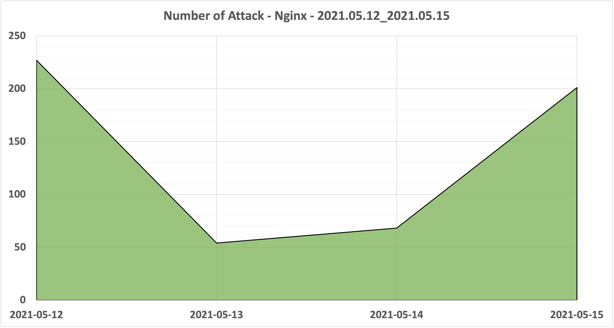
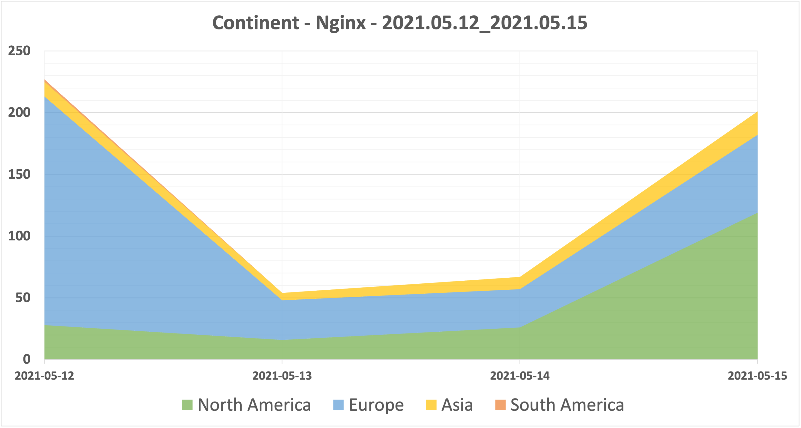

期間
2021.05.12 - 2021.05.15
環境
アプリケーション : Nginx
プラットフォーム : Vultr
場所 : 東京
サーバー台数 : 1台
検知件数
期間中の検知件数の合計は549回になります。

ユーザーエージェント
検知件数が10回以上のユーザーエージェントを記載しています。
| Number of Attack | User Agent |
|---|---|
| 154 | Mozilla/5.0 (Windows NT 10.0; WOW64) AppleWebKit/537.36 (KHTML, like Gecko) Chrome/51.0.2704.103 Safari/537.36 |
| 80 | Mozilla/5.0 (Windows NT 10.0; Win64; x64) AppleWebKit/537.36 (KHTML, like Gecko) Chrome/78.0.3904.108 Safari/537.36 |
| 22 | Mozilla/5.0 (X11; Linux x86_64) AppleWebKit/537.36 (KHTML, like Gecko) Chrome/81.0.4044.129 Safari/537.36 |
| 20 | Mozilla/5.0 zgrab/0.x |
| 14 | Mozilla/5.0 (Windows NT 10.0; Win64; x64) AppleWebKit/537.36 (KHTML, like Gecko) Chrome/74.0.3729.169 Safari/537.36 |
| 12 | python-requests/2.25.1 |
| 11 | Mozilla/5.0 (X11; Ubuntu; Linux x86_64; rv:62.0) Gecko/20100101 Firefox/62.0 |
接続元IPアドレス
接続回数が10回以上のIPアドレスを記載しています。
| Number of Attack | IP Address | # | # | # |
|---|---|---|---|---|
| 154 | 37.136.246[.]188 | VirusTotal | urlscan | AbuseIPDB |
| 93 | 138.68.231[.]120 | VirusTotal | urlscan | AbuseIPDB |
| 80 | 45.155.205[.]181 | VirusTotal | urlscan | AbuseIPDB |
| 18 | 112.137.142[.]35 | VirusTotal | urlscan | AbuseIPDB |
| 16 | 167.99.127[.]132 | VirusTotal | urlscan | AbuseIPDB |
| 12 | 128.199.250[.]120 | VirusTotal | urlscan | AbuseIPDB |
| 11 | 206.189.5[.]79 | VirusTotal | urlscan | AbuseIPDB |
| 10 | 46.249.32[.]208 | VirusTotal | urlscan | AbuseIPDB |
地域
接続元IPアドレスから地域の特定は、IP Geolocation API を使用しています。

| Number of Attack | Continent |
|---|---|
| 311 | Europe |
| 189 | North America |
| 47 | Asia |
| 2 | South America |
国名
接続回数が10回以上の国名を記載しています。
接続元IPアドレスから国名の特定は、IP Geolocation API を使用しています。
| Number of Attack | Country |
|---|---|
| 179 | United States |
| 154 | Finland |
| 99 | Russia |
| 23 | Netherlands |
| 21 | Singapore |
| 18 | Vietnam |
| 11 | Germany |
| 10 | France |
インターネット・サービス・プロバイダ
接続回数が10回以上のISPを記載しています。
接続元IPアドレスからISPの特定は、IP Geolocation API を使用しています。
| Number of Attack | Internet Service Provider |
|---|---|
| 158 | DigitalOcean, LLC |
| 154 | DNA Oyj |
| 80 | OOO "Network of data-centers "Selectel" |
| 18 | VietNam National University |
| 13 | Microsoft Corporation |
| 11 | Amazon.com, Inc. |
| 10 | Serverius |
| 10 | Linode, LLC |
リクエスト
検知件数が10回以上のリクエストを記載しています。
| Number of Attack | Request |
|---|---|
| 155 | GET /phpmyadmin/ HTTP/1.1 |
| 91 | GET /index.php/PHP%0Ais_the_shittiest_lang.php?QQQQQQQQQQQQQQQQQQQQQQQQQQQQQQQQQQQQQQQQQQQQQQQQQQQQQQQQQQQQQQQQQQQQQQQQQQQQQQQQQQQQQQQQQQQQQQQQQQQQQQQQQQQQQQQQQQQQQQQQQQQQQQQQQQQQQQQQQQQQQQQQQQQQQQQQQQQQQQQQQQQQQQQQQQQQQQQQQQQQQQQQQQQQQQQQQQQQQQQQQQQQQQQQQQQQQQQQQQQQQQQQQQQQQQQQQQQQQQQQQQQQQQQQQQQQQQQQQQQQQQQQQQQQQQQQQQQQQQQQQQQQQQQQQQQQQQQQQQQQQQQQQQQQQQQQQQQQQQQQQQQQQQQQQQQQQQQQQQQQQQQQQQQQQQQQQQQQQQQQQQQQQQQQQQQQQQQQQQQQQQQQQQQQQQQQQQQQQQQQQQQQQQQQQQQQQQQQQQQQQQQQQQQQQQQQQQQQQQQQQQQQQQQQQQQQQQQQQQQQQQQQQQQQQQQQQQQQQQQQQQQQQQQQQQQQQQQQQQQQQQQQQQQQQQQQQQQQQQQQQQQQQQQQQQQQQQQQQQQQQQQQQQQQQQQQQQQQQQQQQQQQQQQQQQQQQQQQQQQQQQQQQQQQQQQQQQQQQQQQQQQQQQQQQQQQQQQQQQQQQQQQQQQQQQQQQQQQQQQQQQQQQQQQQQQQQQQQQQQQQQQQQQQQQQQQQQQQQQQQQQQQQQQQQQQQQQQQQQQQQQQQQQQQQQQQQQQQQQQQQQQQQQQQQQQQQQQQQQQQQQQQQQQQQQQQQQQQQQQQQQQQQQQQQQQQQQQQQQQQQQQQQQQQQQQQQQQQQQQQQQQQQQQQQQQQQQQQQQQQQQQQQQQQQQQQQQQQQQQQQQQQQQQQQQQQQQQQQQQQQQQQQQQQQQQQQQQQQQQQQQQQQQQQQQQQQQQQQQQQQQQQQQQQQQQQQQQQQQQQQQQQQQQQQQQQQQQQQQQQQQQQQQQQQQQQQQQQQQQQQQQQQQQQQQQQQQQQQ |
| 18 | GET /.env HTTP/1.1 |
| 14 | GET /wp-login.php HTTP/1.1 |
ログ
https://raw.githubusercontent.com/blackle0pard/HoneypotData/main/nginx/2021/2021-05/nginx_errorlog_20210512.json
https://raw.githubusercontent.com/blackle0pard/HoneypotData/main/nginx/2021/2021-05/nginx_errorlog_20210513.json
https://raw.githubusercontent.com/blackle0pard/HoneypotData/main/nginx/2021/2021-05/nginx_errorlog_20210514.json
https://raw.githubusercontent.com/blackle0pard/HoneypotData/main/nginx/2021/2021-05/nginx_errorlog_20210515.json